对Image Caption的一系列胡扯
0.总结
任务描述
Image Caption(图像标注、看图说话)的主要任务是对所给定的图片，由系统自动给出一句描述图片内容的一句话(通常为英文)。与传统的计算机视觉任务相比，不仅要捕捉目标对象，还需要用自然语言描述目标之间的内在联系(目标的属性、目标涉及到的动作以及目标间的关系)。
研究思路
1. 基于LSTM的方法
基于LSTM的方法最初来自NLP的Encoder-Decoder模型：在论文Show and Tell: A Neural Image Caption Generator中，将Encoder部分用CNN实现，将图片通过CNN转换图像特征，作为Decoder的输入向量。
在上述的Show and Tell基础上，有很多改进的思路：
- 论文 What Value Do Explicit High Level Concepts Have in Vision to Language Problems? 认为，Encoder部分的CNN的最终分类层中蕴含了大量关于图片内容信息；
- 论文 Rethinking the Form of Latent States in Image Captioning 认为，Decoder部分的RNN最终将图片信息转化为一维向量的做法并不自然，因此尝试将图片信息转化为二维矩阵；
- 论文 Unpaired Image Captioning by Language Pivoting 针对一些缺少数据集的语言，提出利用支点语言来进行图像标注的方法；
- 论文 “Factual” or “Emotional”: Stylized Image Captioning with Adaptive Learning and Attention 实现了一种能生成程式化图像描述的方法；
- 论文 Exploring Visual Relationship for Image Captioning 认为，关注图像中对象之间的关系可以更好地生成图像描述；
- 论文 Recurrent Fusion Network for Image Captioning 认为，在Encoder模块加入额外的CNN可以让模型更全面地理解图像内容；
- 论文 Show, Tell and Discriminate: Image Captioning by Self-retrieval with Partially Labeled Data 提出在模型中加入自我检索模块，避免模型生成的描述只是常用词句的重复。
2. 基于CNN的方法
基于CNN的方法也运用了Encoder-Decoder模型，但本方法用CNN代替基于LSTM的方法中的LSTM模块，并取得了与之相近的图像标注性能。虽然在实验中，本方法的损失都要比基于LSTM的方法的损失高，效果不如基于LSTM的方法。但是本方法在相同的时间内，可以训练更多的参数。因此，可能在一些不强求准确率的、希望能快速实现的任务中，更适合采用基于CNN的方法。
3.注意力机制
注意力机制并不是一个独立的研究思路，而是一种对人类的注意力机制的借鉴。
- 论文Show, Attend and Tell: Neural Image Caption Generation with Visual Attention在Show and Tell的基础上加入了注意力机制，让模型能有选择性地关注图像的某些部分；
- 论文Boosted Attention: Leveraging Human Attention for Image Captioning提出了两种不同类型的注意力机制，结合提出了强化注意力机制Boosted Attention。
常用数据集
上述论文中使用到的数据集主要有：
评价标准
- BLEU是最常用的评价标准，BLEU实质是计算两个句子的共现词频率，但容易陷入常用词的陷阱中；
- CIDEr，B-N，M，R；
- 论文Learning to Evaluate Image Captioning提出了一个既能区分人与机器产生的描述，又能良好地应对错误样例的评价标准。
下一阶段的学习
- Encoder-Decoder：目前我对Encoder-Decoder只有比较直观的了解，还需要更进一步的理解；
- CNN、RNN及其变种：CNN在Encoder部分使用广泛，而且对CNN的选择(VGG、GoogleNet等)、CNN的训练都需要一些技巧；RNN及其变种在Decoder部分使用。
1. Show and Tell: A Neural Image Caption Generator
在Show and Tell: A Neural Image Caption Generator中，利用了在机器翻译中常用的Encoder-Decoder结构实现图像标注任务。
代码地址：https://github.com/jazzsaxmafia/show_and_tell.tensorflow
主要研究人员主页：http://www1.icsi.berkeley.edu/~vinyals/
模型
Encoder-Decoder结构: 在机器翻译中，将原单词序列 通过Encoder部分“编码”为一个向量表示，再利用Decoder部分对此向量进行”解码”，输出目标单词序列 。
本论文的方法是，将原来Encoder-Decoder结构中的Encoder部分替换成CNN，利用在图像中常用的CNN来提取图像的特征，再通过Decoder解码生成标注。结构如下图所示：
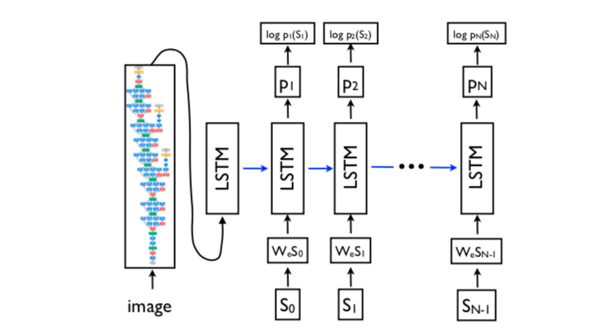
先看提取图像特征的CNN部分，由于这篇论文是谷歌出品的，因此这部分就使用了自家的Inception模型。再看Decoder部分，将RNN换成了性能更好的LSTM，输入还是word embedding，每步的输出是单词表中所有单词的概率，这些都是标准做法了，就不再赘述。
模型的参数为 $\theta$ ，对于一张(训练集中的)图片 $I$ ，其正确的描述为序列 $S=\{S_1,S_2,\dots\}$ ，那么我们要通过训练最大化概率 $p(S|I;\theta)$ ，也就是最大化对给定图片生成正确描述的概率，用以下公式表示：
由于 $S$ 可以表示任何句子，而句子的长度是无限制的，因此常用链规则来描述在 $S_0,\dots,S_N$ 上的联合概率，其中 $N$ 是特定样本的长度：
因为RNN会出现梯度消失和爆炸(vanishing and exploding gradients)，所以使用RNN的改进版LSTM。LSTM的主要结构为：
LSTM通过输入门、遗忘门和输出门来实现信息的控制
遗忘门：该门决定丢弃信息的多少，会读取 $h_{t-1},x_t$ ，给每个在细胞状态 $C_{t-1}$ 的数字输出一个0到1的数值，表示对信息的保留程度：
其中 $h_{t−1}$ 表示的是上一个cell的输出， $x_t$ 表示的是当前细胞的输入， $σ$ 表示sigmod函数。
输入门：该门决定新信息的加入量。首先，由一个sigmoid层决定哪些信息需要更新；由一个tanh层生成一个向量，也就是备选的用来更新的内容 $\tilde{C_t}$ 。在下一步，我们把这两部分联合起来，对cell的状态进行一个更新。最后把旧状态与 $f_t$ 相乘，丢弃掉需要丢弃的信息，再加上 $i_t*\tilde{C_t}$ ，这就是新的候选值：
输出门：该门决定输出的值。首先，通过一个sigmoid层来确定细胞状态的哪个部分将输出出去。接着，我们把细胞状态通过 tanh 进行处理（得到一个在 -1 到 1 之间的值）并将它和 sigmoid 门的输出相乘，最终我们仅仅会输出我们确定输出的那部分：
模型的损失函数是每一步中正确单词的负对数概率的总和：
结果
结果评价方式为人工评价，按照Framing image description as a ranking task: Data, models and evaluation metrics中的要求对生成的句子评分。
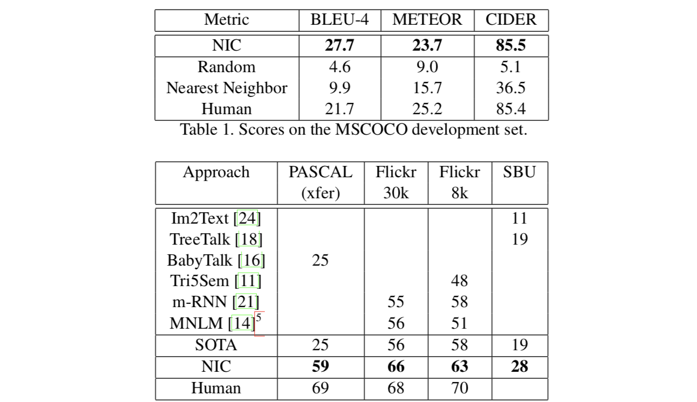
问题与挑战
本论文中提到，该模型存在过拟合的问题，解决方法为：
- 对我们模型的CNN部分的权重初始化为预处理模型(如ImageNet)
- 保持 $W_e$ 的未初始化状态
- 使用dropout以及使用集成模型避免过拟合
Show, Attend and Tell: Neural Image Caption Generation with Visual Attention
代码地址：https://github.com/yunjey/show-attend-and-tell
主要研究人员主页：http://kelvinxu.github.io/
本论文是对第一篇论文的改进，在Show and Tell的基础上，论文Show, Attend and Tell: Neural Image Caption Generation with Visual Attention加入了attention机制。注意力机制模拟了人的注意力，即：在人的视觉系统中，有注意力的存在，因此人在处理图像的时候，没有把图片当作一个整体静态的图片，而是跟随一些显著的特征，按照需要动态地浮现图片的某些部分。本文的主要贡献为：
- 介绍了基于含两种attention：硬注意力机制和软注意力机制的通用框架。软确定性注意力机制通过标准的反向传播算法可进行训练；硬随机性注意力机制通过最大化一个近似可变的下界(等效于REINFORCE)可进行训练(maximizing an approximate variational lower bound or equivalently by)
- 通过显示注意力集中在“哪里”和“什么”，来演示解读该框架的结果的方式。
- 在三个标准数据集上定量地验证了注意力的有用性且拥有最好的性能。
模型
Encoder：卷积特征
通过CNN，从图片中提取特征 $a$ ( $a$ 也被称为annotation向量)：
其中特征 $a$ 共有 $L$ 个，每个都是一个 $D$ 维向量。先前的Show and Tell中通过CNN只提取了一个固定长度的特征，而在本文中，提取的特征代表了图像 $L$ 个不同的位置的特征。
为了能在特征向量与2维图像的一部分之间有更好的相似度，本模型使用lower convolutional layer，而不是像先前的工作中那样使用全连接层。这样可以让Decoder通过在 $L$ 个特征中选择某个子集，以此将注意力集中在图像的某个部分上——这就是注意力机制。
Decoder：LSTM网络
LSTM是一个RNN cell的变种：
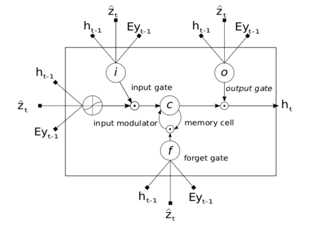
具体的计算公式为：
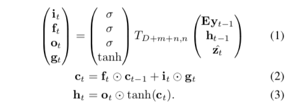
其中 $i_t,f_t,c_t,o_t,h_t$ 分表代表输入、遗忘、记忆、输出和LSTM的隐藏层状态。 $\mathbf y_{t-1}$ 代表上一阶段的输出，而 $\mathbf E_ {\mathbf y_{t-1}}$ 代表输出对应的word embedding形式。
Decoder部分在时间 $t$ 时根据上下文向量 $\hat z_{t}$ 与上一阶段的隐藏层状态 $h_{t-1}$ 。其中上下文向量 $\hat z_{t}$ 是一个与特定输入区域相关的视觉信息，可通过图片的特征进行计算：
其中， $\phi$ 代表一个接受一组向量及其权重，返回单个向量的函数； $\alpha_{t,i}$ (时间 $t$ 时的 $\alpha_i$ )代表生成第 $t$ 个词的时候，位置 $i$ 的特征所占的权重， $\alpha$ 是一个关于上一阶段的隐藏层状态 $h_{t-1}$ 和位置 $i$ 的特征 $a_i$ 的函数：
软与硬
文中介绍了两种注意力机制Stochastic “Hard” Attention和Deterministic “Soft” Attention。其中软注意力使用比较广泛，但两种注意力机制都能提升模型的性能。我目前理解的两种机制的区别主要在对 $\alpha$ 的解读上：
Stochastic “Hard” Attention
当模型生成第 $t$ 个词的时候，我们用 $s_t$ 来表示模型决定注意的位置。 $s_{t,i}$ 是一个独热码的变量(an indicator one-hot variable)，它的第 $i$ 个值为1，其他都为0（也就是说模型在时间 $t$ ，注意了第 $i$ 个位置的信息）。这里的 $\alpha_{t,i}$ 表示“位置 $i$ 是为了生成下一个单词而要关注的正确位置”的概率。
Deterministic “Soft” Attention
在软注意力中， $\alpha$ 表示相对重要性，可通过与 $a_i$ 进行运算得到：
训练过程
- 两种注意力模型都通过SGD来训练(需要使用合适的学习率算法)。本文提到：对Flickr8k数据集，使用RMSProp效果最佳；对于Flickr30k/MS COCO数据集，使用了Adam算法(效果论文中未提及)。
- 为创建decoder可用的向量 $a_i$ ，使用VGGnet在ImageNet上进行预训练且不进行微调（原则上任何encoding方法都可以使用），论文中在第四个卷积层前的池化层使用了 14 x 14 x 512 的特征映射，这意味着decoder以 196 x 512 的尺寸进行操作
- 使用BLEU度量标准
- 在Flickr8k上应用soft attention时，也使用了Whetlab(https://www.whetlab.com/ ，链接无法打开)
结果
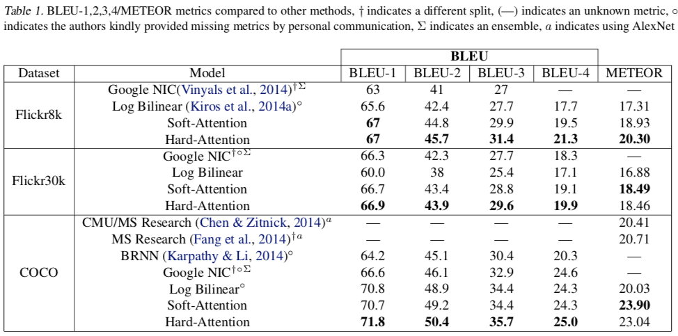
改进与挑战
- 卷积特征提取器的选择：GoogLeNet/VGG/AlexNet
- 单个模型 vs. 集成模型（本论文适用单个模型）
- 数据集的分句。本文使用了Flicker8k的预定义的分句，但是Flicker30k和COCO缺少标准化的分句
3. Convolutional Image Captioning
主要研究人员主页：https://github.com/jyotianeja 不过没有太多相关信息
第三篇论文也是在第一篇论文之后发表的，作者认为，使用LSTM进行图像标注有很多弊端：
- 由于LSTM具有复杂的寻址(address)、重写(overwrite)机制以及内在的序列处理，再加上基于时间的反向传播，在模型的训练期间需要大量的存储。
- 与非连续的CNNs(non-sequential CNNs)相比，LSTM在面对全新的问题时需要更多的工程。
因此，本论文Convolutional Image Captioning根据最近卷积体系结构在其他序列到序列的任务（条件图像生成，机器翻译等）上的成功，提出了解决图像标注这一视觉-语言问题的卷积体系结构，并且引入了注意力机制。本论文中的方法的效果可以与基于LSTM的方法相媲美。
模型
本论文使用了基于CNN的方法解决图像标注问题，模型如下图所示：
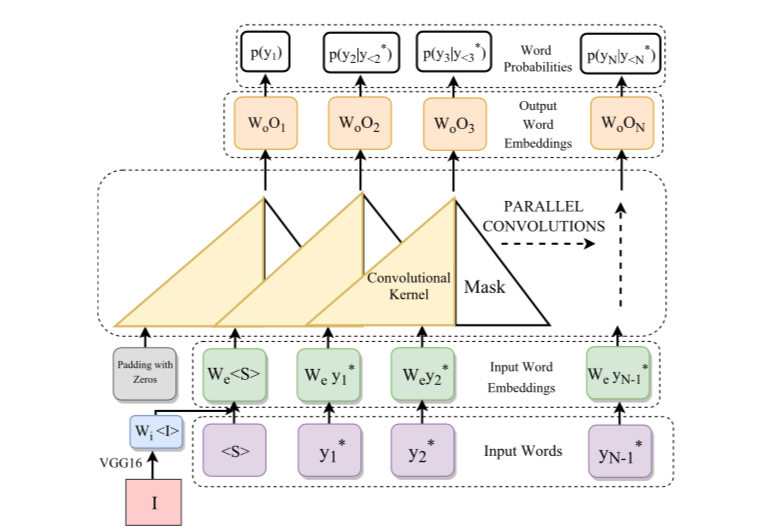
可以发现，本文中的模型与RNN有一点类似，第一个和最后一个部分都是输入/输出词嵌入向量(WordEmbedding)。不过，在RNN方法中，中间部分使用LSTM或者GRU；但在本论文使用的基于CNN的方法中，使用了masked convolutions。和RNN中的中间部分不同，这一部分是不带有递归函数的前馈(feed-forward without any recurrent function)。
本论文使用一个简单的前馈深度网络 $f_w$ 来model $p_{i,w}(y_i)$ ：
也就是根据先前的单词 来预测单词 。具体过程可以大致描述为：首先从起始符号 开始，通过一个前馈网络生成 ，这样 就被采样了；随后 会被反馈到前馈网络中来生成 。重复上述步骤就可以生成全部标注了。
体系结构
本论文中的CNN方法的体系结构如下图所示：
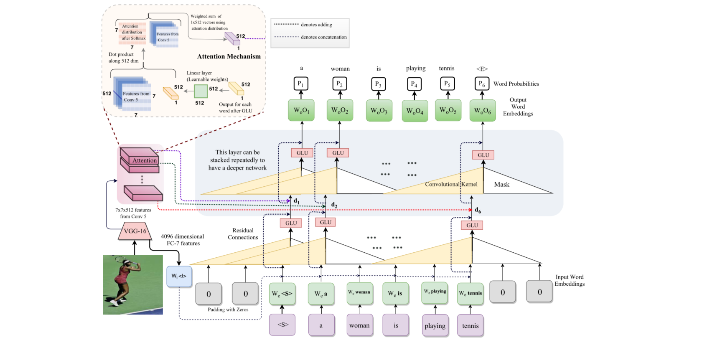
训练：在训练过程中，我们输入文字序列并在前后分别添加开始符号 和结束符号 ，如： 。这些文字通过一下流程进行处理：
- 通过一个输入嵌入层
- 与图像嵌入相结合
- 用CNN模块处理
- 输出嵌入层产生输出概率分布
输入嵌入：与RNN/LSTM相通，本论文的方法训练了一个嵌入层，嵌入层通过被one-hot编码后的输入词进行训练。输入嵌入与图像嵌入相结合，在后面会作为前馈CNN模块的输入。
图像嵌入：图像 $I$ 的特征是从VGG16的fc7层上获取的。其中VGG16网络在ImageNet数据集上进行了预训练。在实践中，在fc7上应用了dropout与ReLU，并利用线性层来获得512维的嵌入。
CNN模块：CNN模块对输入嵌入与图像嵌入的组合进行操作，它使用了3层masked convolutions，随后CNN模块会输出文字，每个文字都是512维向量。
分类层：本方法使用一个线性层，来将CNN模块输出的512维的编码为每个单词的256维表示，然后通过一个全连接层，将其降采样为 $|y|$ 维的激活，最后通过softmax获得输出词概率 $p_{i,w}(y_i|y_{<i},I)$ 。
训练：我们用概率 $p_{i,w}(y_i|y_{<i},I)$ 的交叉熵损失来训练CNN模块与嵌入层。
注意力机制
本方法同样引入了注意力机制——生成512维的图像向量并将其加入每一层的字嵌入中。正式的表述为：
用 d_j 表示CNN模块中单词 j 的嵌入； W 表示应用在 d_j 上的线性层的参数矩阵； c_i 表示位置 i 的512维的空间conv-5特征； $a_{i,j}$ 表示注意力参数：
那么单词 $i$ 的图像向量可通过 $\sum_i a_{ij}c_i$ 计算得到。
结果
训练时间
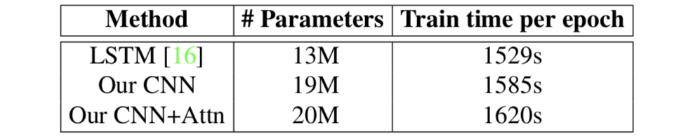
从上表为LSTM方法、本文的CNN方法、本文的CNN方法加上注意力机制的参数以及训练时间数据。因为CNN不像LSTM那样需要进行顺序处理，因此CNN方法的每个参数训练得都要比LSTM方法要快。本文使用PyTorch实现，使用Nvidia Titan X GPU进行训练。
效果

图左一：使用的训练集为MSCOCO。从该图可以看出，在训练集和验证集上，CNN方法都比LSTM方法有更高的交叉熵损失
图左二：图中可以看出，本文的CNN方法在在softmax层上有比LSTM方法更高的熵
图右一：虽然CNN方法的训练损失比LSTM方法的高，但是在验证集上，CNN方法的正确率仅比LSTM方法低约1%
因此我觉得可以认为，如果要追求更好的正确率，本论文中的CNN方法并不是非常先进；但CNN方法的优势是可以快速训练——在相同的时间可以训练1.5倍的参数。
4. What Value Do Explicit High Level Concepts Have in Vision to Language Problems?
主要研究人员主页：http://www.qi-wu.me/、https://cs.adelaide.edu.au/~chhshen/
图像标注的问题与机器语言翻译非常相似。在机器语言翻译中，有很多成果已经显示，即使不关注单词状态的高层模型(higher-level model of state of the word)，也可以得到非常优秀的性能。但本论文认为，在图像标注中常用的模型(也就是show, attend and tell)中，通过Encoder部分的CNN的最终的分类层包含了很多信息，如：图中有无人、图中有无桌子这样的信息。
以属性为基础的V2L模型(An Attribute-based V2L Model)
本文提出的V2L模型如下图：
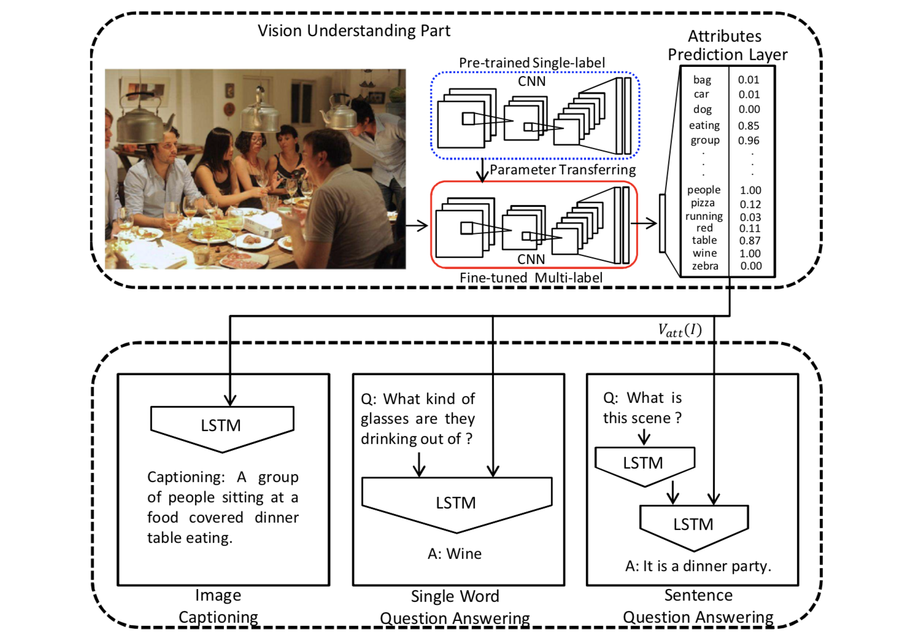
这个模型氛围两个部分：图像分析部分和自然语言生成部分。
在图像分析部分：
- 在图像分析部分，通过使用监督学习来预测一个属性集。本论文将这一部分当作一个多分类问题来解决，通过最小化一个element-wise logistic loss function来训练一个相关的CNN
- 对每个图像 $I$ ，模型都会创建一个固定长度的向量 $V_{att}(I)$ ，该向量的长度与属性集的长度相同。 $V_{att}(I)$ 的每一维都代表相应属性的预测概率
在自然语言生成部分：
使用一个基于LSTM的语句生成器，LSTM的输入是属性向量 $V_{att}(I)$ 。对不同的任务，本论文使用了不同的语言模型：
- 对图像标注问题，本论文遵从论文show and tell来通过LSTM生成语句
- 对单字问题回答(single-word question answering)，遵从论文Image Question Answering: A Visual Semantic Embedding Model and a New Dataset使用LSTM作为一个分类器，由分类器LSTM为每个潜在问题提供一个概率(likelihood)
- 对可随意回答的问题(open-ended question)，使用一个编码器LSTM来为问题进行编码、另一个解码器LSTM接收属性向量 $V_{att}(I)$ 来生成基于问题的回答。
属性预测器
在本部分，无论最终的任务是什么，首先都要构建一个属性词汇表(attributes vocabulary)。本论文中的词汇表是从训练数据中的描述中提取的，并且不关注时态和单复数形式(如’ride’和’riding’，’bag’与’bags’)。P.S 在后续部分会单独学习得到其他候选词。
有了属性词汇表后，可以根据描述把图像的每一部分与相应的一组词相关联。本论文将这一关联任务当作多标签分类问题( multi-label classification problem)来解决，设计了设计基于区域的多标签分类框架。
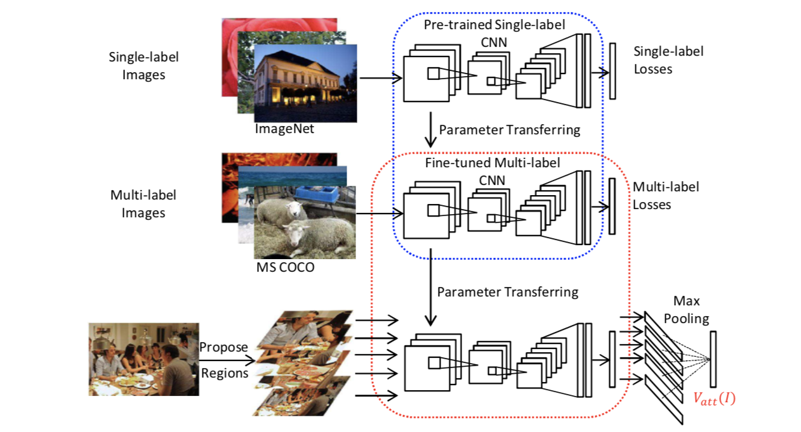
上图是属性预测网络的结构。使用了AlexNet作为共享CNN(shared CNN)的初始化，然后共享CNN会在多标签数据集下进行微调。假设有 $N$ 个训练样例， $\mathbf{y_i}=[y_{i1},\dots,y_{ic}]$ 是第 $i$ 个图像的标签向量， $y_{ij}=1$ 代表图像与属性 $j$ 相关； $p$ 代表预测概率。那么需要进行最小化的损失函数即为：
语言生成器
与常见做法相似，本论文在此部分通过最大化给定图片描述的概率，训练了一个语言生成模型。与常规做法不同的是，本论文使用语义属性预测概率(semantic attribute prediction probability) $V_{att}(I)$作为输入。假设 $\{S_!,\dots,S_L\}$ 是一个文字序列，对给定上下文词和相关图像的单词的对数似然概率可以表示为(The log-likelihood of the words given their context words and the corresponding image can be written as)：
其中， $p(S_t|S_{1:t-1},V_{att}(I))$ 代表了在给定属性向量 $V_{att}(I)$ 与其前面的单词 $S_{1:t-1}$ 的情况下，生成单词 $S_t$ 的概率。
结果
在本论文中，除了图像标注问题，还涉及到了单字问题回答和可随意回答的问题。通过实验说明，在上述的3类问题中，使用本文提出的 $V_{\text{att}}(I) $ 代替其他方法使用的卷积特征，都可以大幅提高模型的性能与效果。
5. Learning to Evaluate Image Captioning
主要研究人员主页：https://www.cs.cornell.edu/~andreas/、http://www.guandaoyang.com/
论文概述
本论文与其他论文不同，没有研究图像标注的问题，而是提出了一个全新的图像标注的评价指标(evaluation metric)。本论文提出的评价指标是基于学习的——根据论文的描述：经过训练后，评价指标可以与人一样区分机器生成的描述与人的描述，同时还能很好得应用于目标错误样例(targeted pathological cases)。不过，本论文没有考虑到进行人为描述的人的个性——对同一张图片，不同的人也可能给出不同的描述。鉴别这种区别并将其纳入指标中是未来的一个研究方向。
评价指标的评价标准
目前常用的图像标注模型的评价有BLEU、METEOR、ROUGE和CIDEr，这些指标都有一个共同点，即主要根据生成的描述与参考描述之间的文字重叠程度来判断图像标注的好坏。 最新提出的SPICE标准通过测量生成的描述所构建的场景图与参考描述所构建的场景图的相似性来评价，更接近于人类的判断
这些指标的不足为：
- 许多指标是基于文字重叠程度的，而基于文字重叠程度的指标很难捕获句子的语义，与人类的判断相差甚远。
- 每个评价指标都有其明显的盲点。比如，基于规则的指标往往不灵活，无法对新的错误样例(new pathological cases)作出良好的反应。
而本论文提出的指标是基于学习的标注评价指标。这个指标可以直接捕获人类的判断，而且对目标病理案例具有灵活性。并且本论文展示了训练出良好的标注评价的关键因素，并展示了本指标的有效性。
6. Rethinking the Form of Latent States in Image Captioning
代码地址：https://github.com/doubledaibo/2dcaption_eccv2018
主要研究人员主页：https://sites.google.com/site/daibohr/
论文概述
本论文对图像标注中的潜在状态(latent states)形式的进行了再思考：先前提到的基于RNN的方法通常都会将潜在状态表示为1维的序列(也就是向量)，并将其认为是正确而自然的做法。本文选择了另外一个办法，即用二维映射(2-D maps)来编码潜在状态。
一维的弊端
- 为了和潜在状态保持一致，图像也会被压缩为一维向量。这样会损失重要的空间信息、模型变得过于依赖多元词组的统计信息、更容易陷入重复高频率词句的陷阱中；
- 用一维向量来表示潜在状态，会让潜在状态在解码过程中的动态变化难以进行可视化的分析。
二维的优势
文中的对向量状态表示与二维状态表示进行了研究，表明：
用二维结构来描述潜在状态，保留了更多的图片信息，可以可视化地分析潜在状态在解码过程中的动态变化：
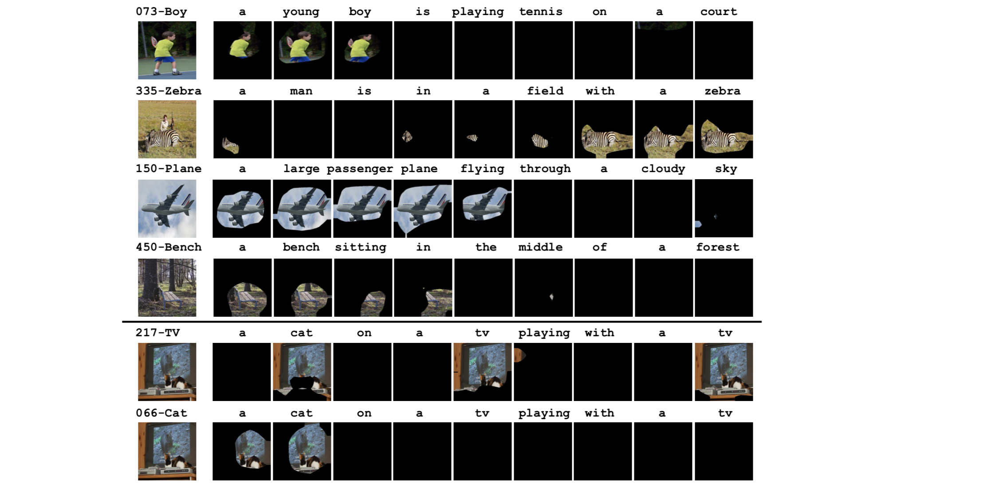
上图显示了几个图像及其生成的图像，以及解码过程后某些通道的激活区域。
使用二维结构能更好地形成标注。在MSCOCO和Flickr30k上都实现了显著的性能提升
二维结构与视觉的解释(visual interpretation)更加相符
经过本文的实验，发现在图像标注问题中，潜在状态的二维状态始终能有更高的性能。并且二维状态还保留了潜在状态的空间局部性，这有助于揭示解码过程的内部动态，并解释视觉和语言域(linguistic domains)之间的联系。
7. Unpaired Image Captioning by Language Pivoting
主要研究人员主页：http://jxgu.cc/
论文概述
通常，图像标注会从训练集的文字-图像对中学到从图像到文字序列的映射。但是一些小众语言，很难有大规模的图像标注的语料库。因此本论文提出利用支点语言进行图像标注，也就是希望根据图像生成目标语言的标注，但是没有相应的训练集。因此分别训练图像到支点的映射以及支点语言到目标语言的映射，即 Image Caption Generation + Neural Machine Translation：
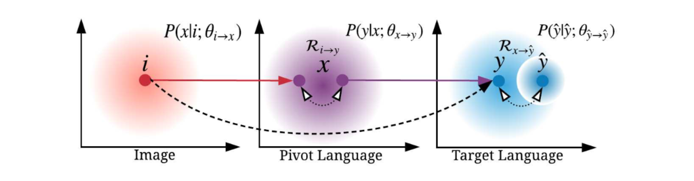
上图中，虚线表示没有 $i,x,y,\hat{y}$ 分别代表目标语言中的源图像、支点语言句子、目标语言句子、真实的标注。虚线表示两端没有可用的平行语料库；实线表示解码的方向；圆圈内的虚线表示标注与翻译数据之间的风格差异和分布差异。
和Image caption+谷歌翻译相比优势在哪里呢?
8. Boosted Attention: Leveraging Human Attention for Image Captioning
主要研究人员主页：https://scholar.google.com/citations?user=oThw5jEAAAAJ&hl=en 谷歌学术的主页
https://www-users.cs.umn.edu/~qzhao/
论文概述
因为注意力机制鼓励模型有选择地关注感兴趣的区域，因此它在图像标注任务中应用广泛且有效。现有的模型一般依赖于自上而下的语言信息(top-down language information)，并通过优化标注目标来隐式地学习注意力。但是这种方法可能无法在没有直接监督注意力的情况下集中于正确的区域。
为解决这一问题，本文提出了两种注意力机制，认为这两种注意力机制具有互补性质。开发了一个模型Boosted Attention，并将其整合到图像标注模型中。Boosted Attention将基于刺激的注意力(stimulus-based ttention )与自上而下的注意力相结合来进行图像标注：
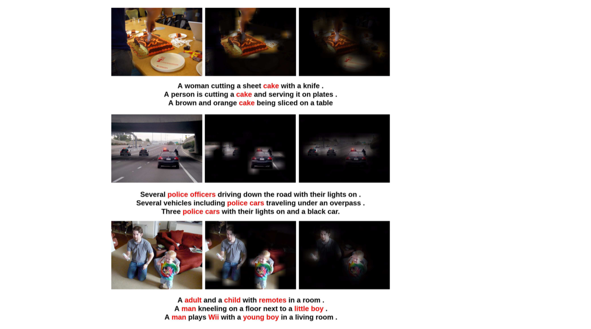
上图中，从左到右依次是：原始图片、人的注意力、基于刺激的注意力。
Boosted Attention鼓励模型关注基于自然语言中的特定任务的自上而下信号的视觉特征(visual features based on task-specific top-down signals from natural language )，同时关注由任务独立刺激强调的显著区域(salient regions highlighted by task-independent stimulus)：
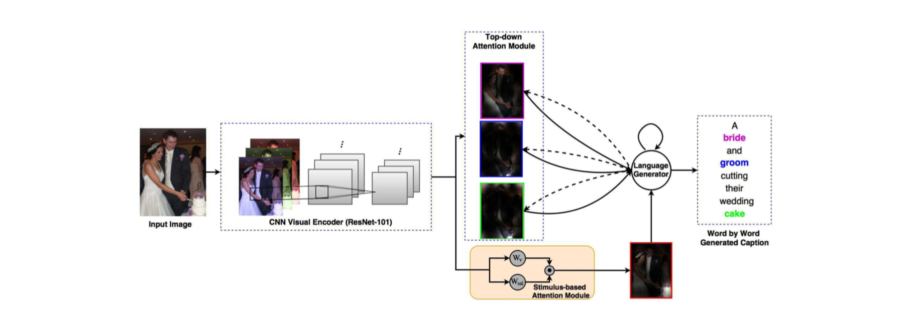
上图是Boosted Attention的结构示例，图像通过Encoder产生的图像编码会分别进入自上而下的注意力模块和基于刺激的注意力模块。
9. “Factual” or “Emotional”: Stylized Image Captioning with Adaptive Learning and Attention
主要研究人员主页：http://www.cs.rochester.edu/u/tchen45/ 、 http://www.cs.rochester.edu/u/jluo/
论文概述
本论文的图像标注任务比较特殊：希望模型生成具有具有特定语言风格(如：例如，幽默，浪漫，积极、消极)的标注，同时在语义上要准确描述图片内容。为满足这两种要求，本论文提出了一种新颖的程式化图像标注模型(stylized image captioning model)。
首先，本文设计了一种LSTM的全新变体：style-factual LSTM。这种LSTM接收会通过两组矩阵分别捕获事实与程式化的信息，并根据先前的上下文来学习两组单词的权重。
style-factual LSTM
style-factual LSTM将两个矩阵组 $S_x,S_h$ 作为权重 $W_x,W_h$ 的对应项来学习程式化的标注；在时间 $t$ ，通过同步学习自适应权重 (adaptive weights) $g_{xt},g_{ht}$ 来调整 $W_x,S_x$ 和 $W_h,S_h$ 之间的相对注意力权重(relative attention weights)。style-factual LSTM的结构如下图所示：
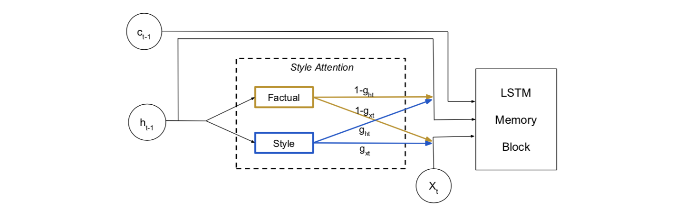
上图中，四个权重，$1-g_{ht},1-g_{xt},g_{ht},g_{xt}$ ，分别控制 $W_{hi},W_{xi},S_{hi},S_{xi}$ 矩阵的比例。其中 $W_x,W_h$ 负责根据输入图像生成描述事实的标注，而 $Sx,Sh$ 负责将特定风格融入到标注中。
在时间 $t$ ，style-factual LSTM会将 $h_{t-1}$ 馈送到具有一个输出节点的两个独立子网络中，其在使用sigmoid单元将输出映射到（0的范围）之后最终计算出gxt和ght。1）。
直观上讲，当模型侧重于预测描述事实的单词时， $g_{xt}$ 和 $g_{ht}$ 应接近0，这鼓励模型基于 $W_x$ 和 $W_h$ 来预测单词；当模型侧重于预测程式化单词时， $g_{xt}$ 和 $g_{ht}$ 应该接近1，这鼓励模型基于 $Sx$ 和 $S_h$ 来预测单词。
10. Exploring Visual Relationship for Image Captioning
主要研究人员主页：http://tingyao.deepfun.club/、https://scholar.google.com.hk/citations?user=7Yq4wf4AAAAJ&hl=zh-CN
论文概述
在其他解决图像标注的方法都没有关注图像中对象之间的关系，但是我们有理由相信，对对象之间的关系进行建模可以帮助模型更好地描述图像。因此，本文使用了一种全新的设计——在基于注意力的encoder-decoder框架下探索图像标注问题的对象之间的联系。
具体来说，本文提出了图形卷积网络和长短期记忆架构(GCN-LSTM)，它能将语义和空间对象关系集成到图像编码器中——基于检测到的对象的空间联系和语义联系来建图，然后通过GCN，利用图的结构来提炼每个区域代表的对象的表示。通过学习得到的区域级的特征，GCN-LSTM用基于LSTM的标注框架和注意机制来生成描述。
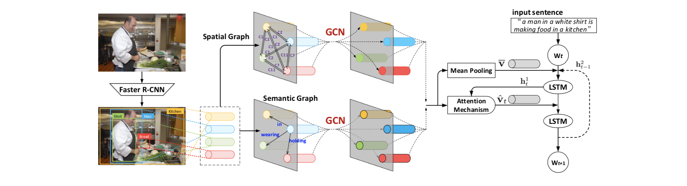
上图是对本文提出的GCN-LSTM的一个概述。图像首先通过Faster R-CNN来检测到一组显著的图像区域。然后，在这些区域上构建语义/空间有向图(semantic/spatial graph with directional edges)，其中顶点表示区域、边缘表示区域间的语义/空间关系。接下来，利用GCN在结构化语义/空间图中对具有视觉关系的区域进行上下文编码。最后，将来自每种图的学习的关系感知区域级特征反馈到一个单独的Attention LSTM解码器中来产生句子。
11. Recurrent Fusion Network for Image Captioning
主要研究人员主页：https://dblp.org/pers/hd/j/Jiang:Wenhao、http://www.yugangjiang.info/
论文概述
在基于encoder-decoder框架下的图像标注解决方案中，在encoder模块都只用一个特定的CNN，如ResNet或Inception-X，最后生成的特征也只描述来自一个特定视点的图像内容，无法全面理解图像中的语义内容。在本文中，利用来自多个编码器的互补信息(complementary information)，提出了一种新的循环融合网络(RFNet)。在RFNet中，在编码器和解码器之间会一个插入循环融合的过程。该模型的融合过程可以利用多个图像编码器之间输出之间的相互作用，为解码器生成新的压缩和语义表示(compact and informative representations)。
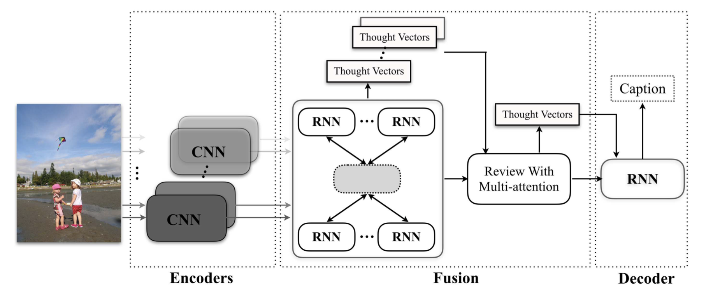
上图是RFNet的结构，使用了多个CNN作为编码器，并在编码器之后插入循环融合程序，让解码器能有更好的表示效果。RFNet的循环融合过程包括两个阶段，每个阶段可以被视为一个特殊的RNN。 在第一阶段，通过吸收来自其他表示的互补信息，将每个图像表示压缩成一组思想向量(thought vectors)。 然后在第二阶段将生成的思想向量集压缩成另一组思想向量，其将用作解码器的注意力模块的输入。
12. Show, Tell and Discriminate: Image Captioning by Self-retrieval with Partially Labeled Data
论文概述
本论文认为，尽管很多研究人员在图像标注上做出了巨大努力，但为图像生成区别性描述(discriminative captions)仍然是不平凡的(non-trivial)——大多数传统方法模仿语言的结构模式，最后往往会忽略每个图像的独特方面，陷入对常用短语或句子的重复中：
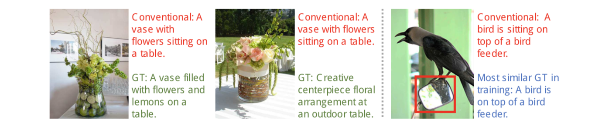
从上图可见，模型生成的标注非常普通且模块化。
因此本文提出了一个包含自我检索模块的图像标注模型，自我检索模块鼓励模型更多地产生区别性的描述。这样有两个优势：
- 自我检索模块可以度量和评估模型生成的表述，以确保生成的描述的质量
- 生成的描述和图像之间的对应关系会很自然地包含进生成过程(generation process)中，而不需要人工进行标注。因此本论文的方法可以利用大量未标记的图像来提高模型生成描述的性能而无需额外的标注。